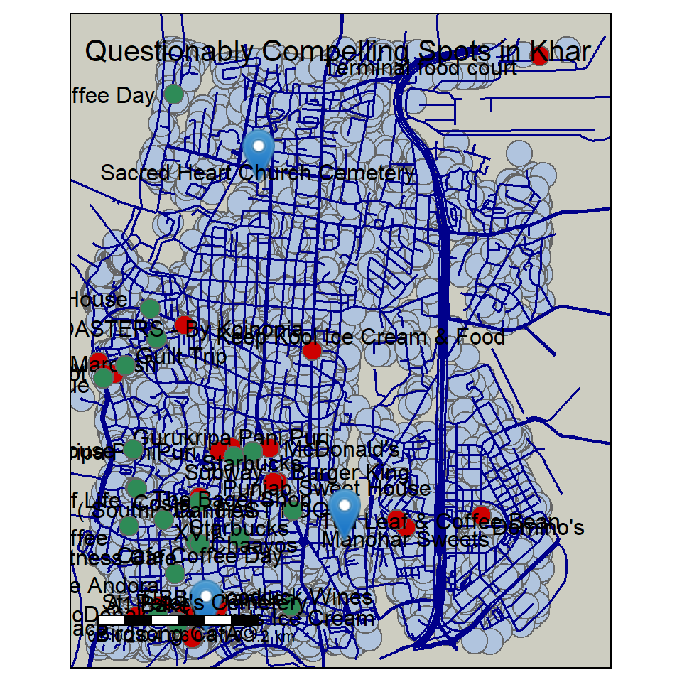
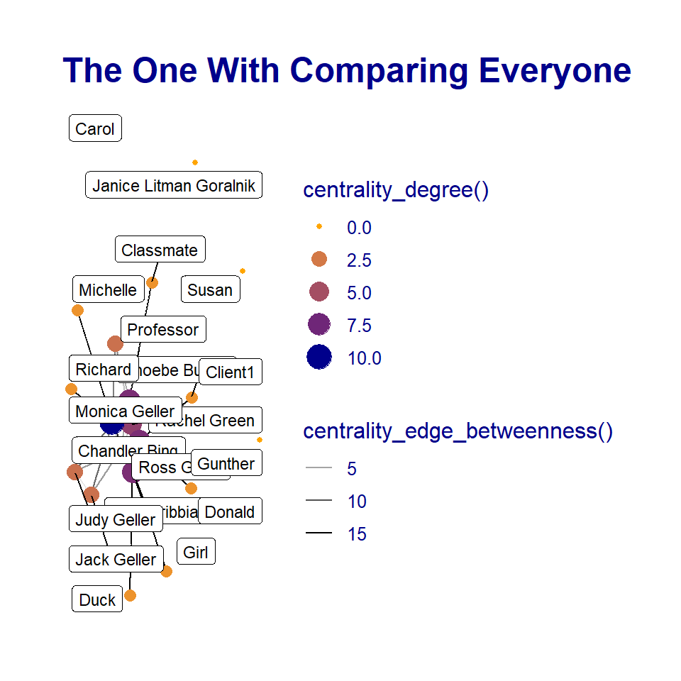
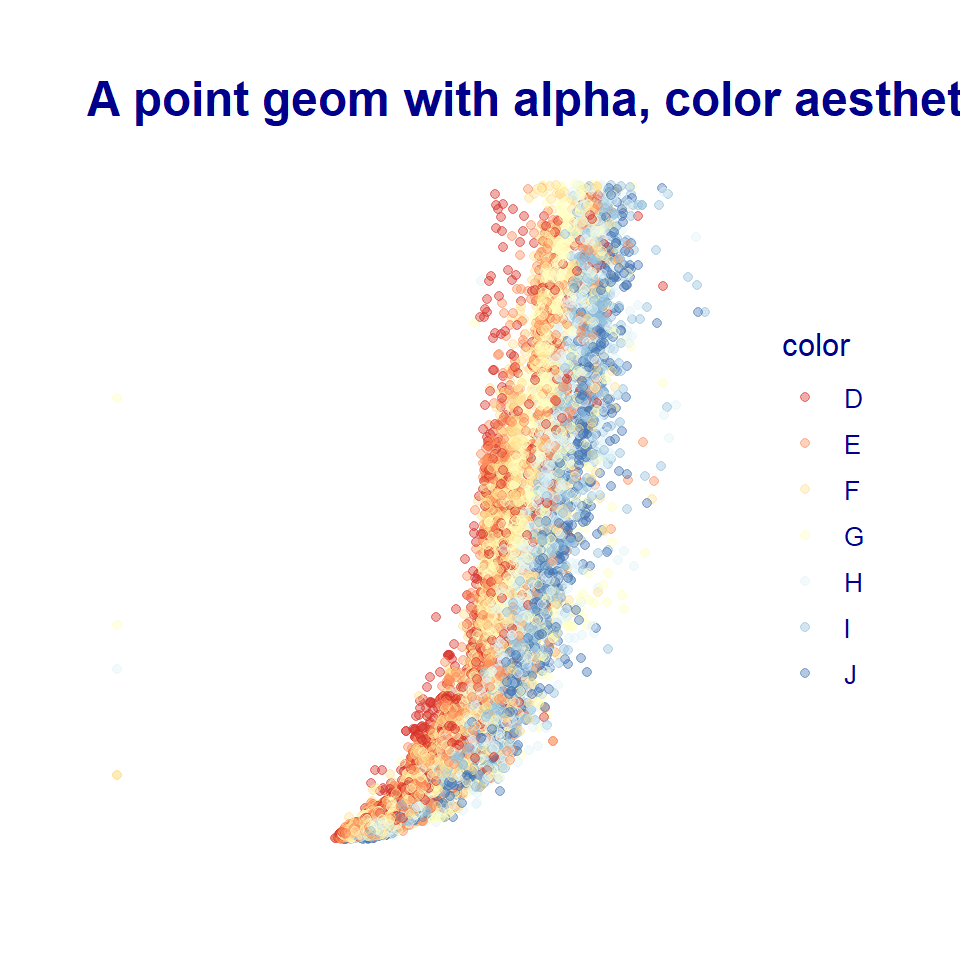

Hello, I am Devanshi, below are some graphs I did using Rstudio.
We learnt how to create a map with code using ‘tmaps’.I created an interactive map of Khar, Mumbai and plotted buildings,roads, fast-food places, cafes and cemeteries.
bbox_khar <- getbb("Khar, Mumbai, India")
bbox_khar## min max
## x 72.81371 72.85371
## y 19.05246 19.09246dat_khar_B <- extract_osm_objects(bbox_khar, "building")
dat_khar_H <- extract_osm_objects(bbox_khar, "highway")
dat_khar_R <- extract_osm_objects(bbox_khar, key = "amenity", value = "fast_food", return_type = "points")
dat_khar_E <- extract_osm_objects(bbox_khar, key = "amenity", value = "cafe", return_type = "points")
dat_khar_G <- extract_osm_objects (bbox = bbox_khar, key = "landuse", value = "cemetery") tmap_mode("plot")
tm_shape(dat_khar_B)+
tm_bubbles(col = "lightsteelblue")+
tm_shape(dat_khar_H) +
tm_lines(col = "darkblue", lwd = 1.5) + #roads
tm_shape(dat_khar_R) +
tm_symbols(col = "red3") +
tm_text("name", auto.placement = TRUE, size = 1) + #fast food
tm_shape(dat_khar_E)+
tm_symbols(col = "seagreen")+
tm_text("name", auto.placement = TRUE, size = 1)+ #cafe
tm_shape(dat_khar_G)+
tm_markers( col = "blue")+ #cemetery
tm_text("name", auto.placement = TRUE, size = 1)+ #cemetery
# tm_compass(type = "rose", position = c("right", "top")) +
tm_scale_bar(width = 4, position = c("left", "bottom"), text.size = 1) +
tm_layout(title = "Questionably Compelling Spots in Khar", title.size = 4, fontfamily = "Century Gothic", bg.color = "ivory3")
tmap_style("watercolor")I constructed my dataset based on the iconic TV show ‘Friends’.
I chose 3 random episodes across the seasons to map the number of interactions among the characters.
friends_nodes <- read_csv("Friends-Nodesdatasettwo.csv" )
friends_edges <- read_csv( "Friends-Edgesdatasettwo.csv")
friends_nodes## # A tibble: 20 x 5
## names sex condition sign id
## <chr> <chr> <chr> <chr> <dbl>
## 1 Rachel Green F employed Libra 1
## 2 Monica Geller F employed Virgo 2
## 3 Phoebe Buffay F self-emplyed Aquarius 3
## 4 Joey Tribbiani M self-employed Leo 4
## 5 Chandler Bing M employed Gemini 5
## 6 Ross Geller M employed Taurus 6
## 7 Gunther M self-employed Scorpio 7
## 8 Jack Geller M unemployed Virgo 8
## 9 Judy Geller F unemployed Aquarius 9
## 10 Janice Litman Goralnik F unemployed Sagittarius 10
## 11 Carol F unemployed Cancer 11
## 12 Susan F employed Virgo 12
## 13 Professor M self-employed <NA> 13
## 14 Client1 M <NA> <NA> 14
## 15 Richard M self-employed Capricorn 15
## 16 Girl F <NA> <NA> 16
## 17 Donald M <NA> <NA> 17
## 18 Michelle F <NA> <NA> 18
## 19 Classmate F <NA> <NA> 19
## 20 Duck M <NA> <NA> 20friends_edges## # A tibble: 30 x 4
## from to weight type
## <chr> <chr> <dbl> <chr>
## 1 Joey Tribbiani Chandler Bing 10 friends
## 2 Ross Geller Joey Tribbiani 13 friends
## 3 Ross Geller Chandler Bing 11 friends
## 4 Rachel Green Ross Geller 10 benefits
## 5 Ross Geller Phoebe Buffay 8 friends
## 6 Chandler Bing Phoebe Buffay 7 friends
## 7 Monica Geller Phoebe Buffay 8 friends
## 8 Monica Geller Ross Geller 7 siblings
## 9 Phoebe Buffay Rachel Green 9 friends
## 10 Monica Geller Rachel Green 5 friends
## # ... with 20 more rowsA ‘tbl_graph’ is needed to provide the attributes and brief description of the dataset./
friends <- tbl_graph(nodes = friends_nodes,
edges = friends_edges,
directed = FALSE)
friends## # A tbl_graph: 20 nodes and 30 edges
## #
## # An undirected simple graph with 5 components
## #
## # Node Data: 20 x 5 (active)
## names sex condition sign id
## <chr> <chr> <chr> <chr> <dbl>
## 1 Rachel Green F employed Libra 1
## 2 Monica Geller F employed Virgo 2
## 3 Phoebe Buffay F self-emplyed Aquarius 3
## 4 Joey Tribbiani M self-employed Leo 4
## 5 Chandler Bing M employed Gemini 5
## 6 Ross Geller M employed Taurus 6
## # ... with 14 more rows
## #
## # Edge Data: 30 x 4
## from to weight type
## <int> <int> <dbl> <chr>
## 1 4 5 10 friends
## 2 4 6 13 friends
## 3 5 6 11 friends
## # ... with 27 more rowsset_graph_style( family = "Calibri", face = "plain", size = 12, text_size = 13, text_colour = "darkblue")
friends %>%
activate(nodes) %>%
# Who has the most connections?
mutate(degree = centrality_degree()) %>%
activate(edges) %>%
# Who is the go-through person?
mutate(betweenness = centrality_edge_betweenness()) %>%
# discrete colour legend
scale_color_gradient(guide = "legend")## <ScaleContinuous>
## Range:
## Limits: 0 -- 1# or even less typing
ggraph(friends,layout = "nicely") +
geom_edge_link(aes(alpha = centrality_edge_betweenness())) +
geom_node_point(aes(colour = centrality_degree(),
size = centrality_degree())) +
scale_color_gradient(guide = "legend",
low = "orange",
high = "darkblue")+
geom_node_label(aes(label = names),repel = TRUE, max.overlaps = 30, size = 3)+
labs(title = "The One With Comparing Everyone ")
The graph filters the interaction between the characters. The character having the highest ‘centrality degree’ and ‘centrality edge’ is responsible for being the one that links many characters together.
I chose the ‘diamonds’, dataset to analyze the relationships among its various features.
glimpse(diamonds)## Rows: 53,940
## Columns: 10
## $ carat <dbl> 0.23, 0.21, 0.23, 0.29, 0.31, 0.24, 0.24, 0.26, 0.22, 0.23, 0.~
## $ cut <ord> Ideal, Premium, Good, Premium, Good, Very Good, Very Good, Ver~
## $ color <ord> E, E, E, I, J, J, I, H, E, H, J, J, F, J, E, E, I, J, J, J, I,~
## $ clarity <ord> SI2, SI1, VS1, VS2, SI2, VVS2, VVS1, SI1, VS2, VS1, SI1, VS1, ~
## $ depth <dbl> 61.5, 59.8, 56.9, 62.4, 63.3, 62.8, 62.3, 61.9, 65.1, 59.4, 64~
## $ table <dbl> 55, 61, 65, 58, 58, 57, 57, 55, 61, 61, 55, 56, 61, 54, 62, 58~
## $ price <int> 326, 326, 327, 334, 335, 336, 336, 337, 337, 338, 339, 340, 34~
## $ x <dbl> 3.95, 3.89, 4.05, 4.20, 4.34, 3.94, 3.95, 4.07, 3.87, 4.00, 4.~
## $ y <dbl> 3.98, 3.84, 4.07, 4.23, 4.35, 3.96, 3.98, 4.11, 3.78, 4.05, 4.~
## $ z <dbl> 2.43, 2.31, 2.31, 2.63, 2.75, 2.48, 2.47, 2.53, 2.49, 2.39, 2.~diamonds <- diamonds %>% drop_na()diamonds %>%
slice_sample(prop = 0.7) %>%
ggplot(.) +
geom_point(aes(x = x, y = price, color = color), alpha = 0.4) + scale_color_brewer(palette = "RdYlBu") +
ggtitle("A point geom with alpha, color aesthetics")
#alpha + colorWe can see the co-relation between ‘x’, the length in mm and ‘price’. When the length is increased, the price too rises, the readings are filtered by another qualitative feature, ‘color’ which ranks the diamond color from D(best) to J(Worst).
This course reformed my outlook on coding, Arvind’s belief that intuition is more important than just memorizing the code, not only made coding less stressful but also fun to play around with. We were introduced to the idea that geometrical shapes can hold complex metaphors. I learnt some methods of unfolding all the components of a dataset and to try and observe the layers closely to know its significance. I learnt a lot about paying attention to the minutest detail, to explore freely and to learn by trial-and-error method. I feel that I can take foreword these concepts to further explore networks and numbers.